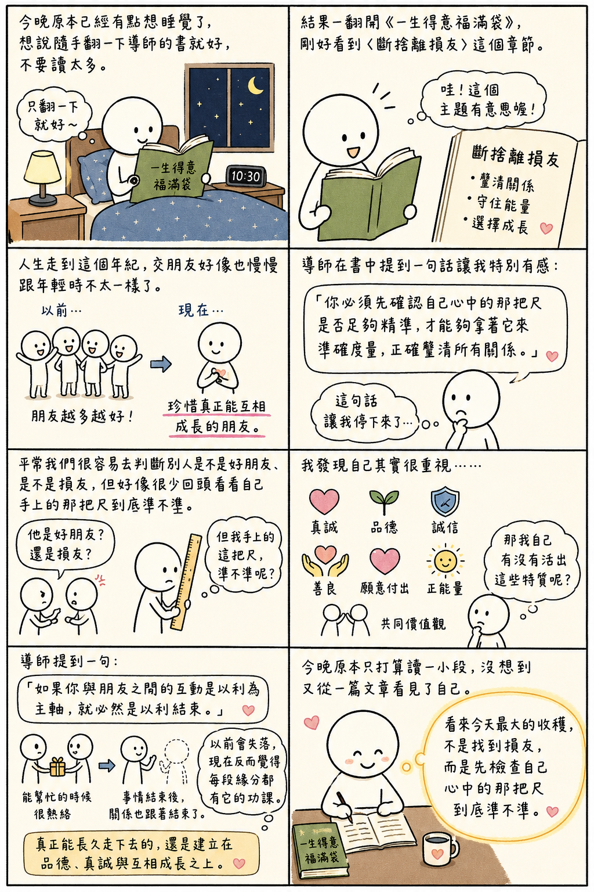

日期：2026/06/22

今晚原本已經有點想睡覺了，想說隨手翻一下導師的書就好，不要讀太多。
結果一翻開《一生得意福滿袋》，剛好看到〈斷捨離損友〉這個章節。
看到標題時，我心裡還想說：「哇！這個主題有意思喔！」 畢派人生走到這個年紀，交朋友好像也慢慢跟年輕時不太一樣了。以前總覺得朋友越多越好，現在反而覺得時間有限，能量有限，與其認識很多人，不如珍惜真正能夠互相成長的朋友。
導師在書中提到一句話讓我特別有感：「你必須先確認自己心中的那把尺是否足夠精準，才能夠拿著它來準確度量，正確釐清所有關係。」
看到這句時，我忽然停了下來。因為平常我們很容易去判斷別人是不是好朋友、是不是損友，但好像很少回頭看看自己手上的那把尺到底準不準。我發現自己其實很重視真誠、品德、誠信、善良、願意付出、正能量，以及共同價值觀。
可是想到這裡時，我又忍不住問自己：「那我自己有沒有活出這些特質呢？」 好像這才是更重要的問題。
另外，導師提到一句：「如果你與朋友之間的互動是以利為主軸，就必然是以利結束。」 這一句我也很有感。因為人生當中確實遇過一些朋友，當你能幫忙的時候很熱絡，但事情結束後，關係也跟著結束了。
以前遇到這種情況會有點失落，現在反而覺得，也許每段緣分都有它的功課。真正能夠長久走下去的，還是建立在品德、真誠與互相成長之上。
今晚原本只打算讀一小段，沒想到又從一篇文章看見了自己。看來今天最大的收穫，不是找到損友，而是先檢查自己心中的那把尺到底準不準。